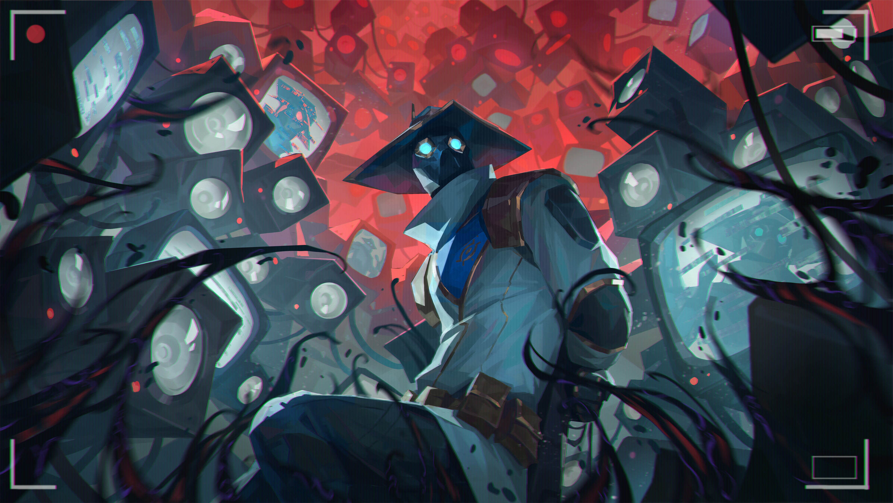

Discover the milestones that have shaped Super Duper into what it is today.
Super Duper was founded by Baron Willy in the year 1988 after the Baron's wishes to make an impact in the world of education, using the money he received from 1985 Nobel Peace award, Baron Willy opened the first Super Duper Tuition Center in Malaysia.
We received our first accreditation in the year 2000 by the infamouse Bejing Corn Inc.
Even in its early days on this site, the Tuition center attracted high profile visiting lecturers including Oppenheimer, the father of atomic bomb, Nicholas .J. Fury, director of S.H.I.E.L.D, Mohamad Ali Gator, world renowned biologist on riverside ecology.
During the pandemic, we have the foresight to realise that education transcends the physical plane. Even with the MCO restriction going on, we offered our service through online classes. We also have the foresight to not only provide online classes, but to ensure that the students remain vigilent during our lectures by installing cameras in their home.
